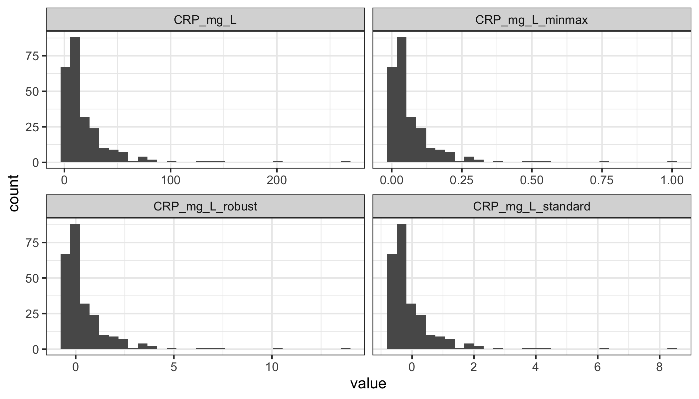
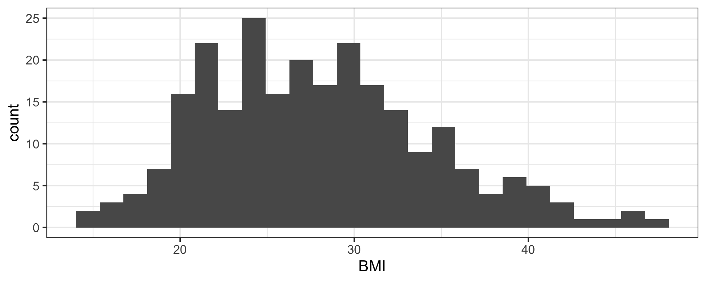
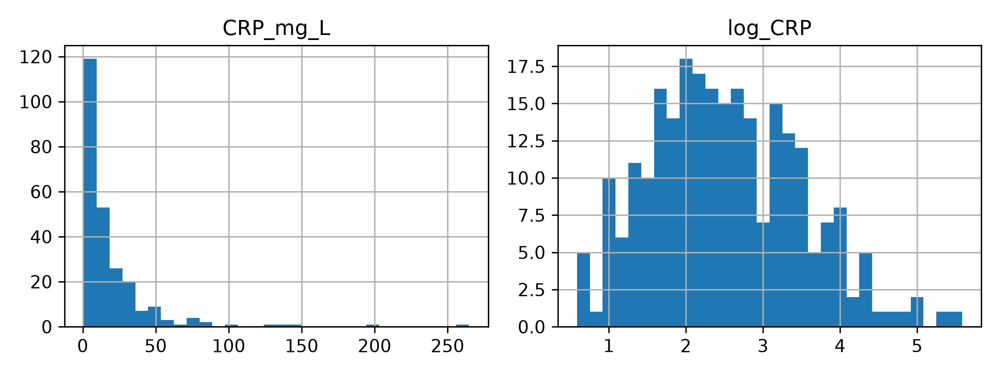
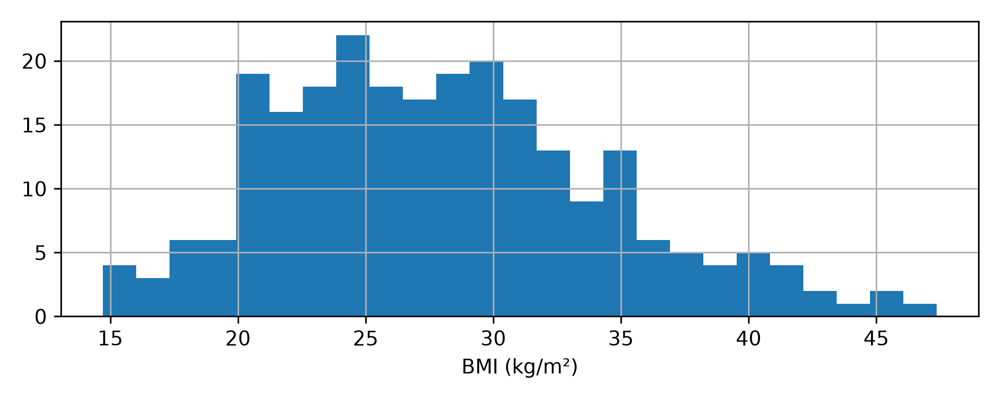

library(tidyverse)
hospital <- read_csv("data/hospital_admissions.csv", show_col_types = FALSE)
scale_cols <- c("age", "systolic_BP", "CRP_mg_L")
hospital_scaled <- hospital |>
mutate(
across(all_of(scale_cols),
~ (.x - min(.x)) / (max(.x) - min(.x)),
.names = "{.col}_minmax"),
across(all_of(scale_cols),
~ as.numeric(scale(.x)),
.names = "{.col}_standard"),
across(all_of(scale_cols),
~ (.x - median(.x)) / IQR(.x),
.names = "{.col}_robust")
)Exercise 2.5 — Scaling, transformations and feature engineering
Note20-25 minutes, in R or in Python
Pick a tab and stay in it. The two tabs are the same exercise — the same steps, the same questions and the same numbers.
Objectives
By the end of this exercise you will be able to:
- put variables measured in different units onto a comparable scale, three different ways;
- say what an extreme value does to each scaler, and to the other patients;
- use a log transformation to change the shape of a skewed variable;
- derive a clinically meaningful feature from columns you already have.
The scenario
We are preparing the hospital admissions data to predict length of stay. Its variables are measured in different units: age in years, blood pressure in mmHg and C-reactive protein (CRP) in mg/L.
CRP is a marker of inflammation. Most patients have relatively low values, but some have very high measurements. This exercise looks at how different scaling methods handle those values, how a transformation changes a distribution, and how to create a clinically useful feature.
1. Scaling: three different approaches
Compare Min-Max, Standard and Robust scaling for age, systolic blood pressure and CRP.
Compare the range of values:
hospital_scaled |>
select(starts_with("CRP")) |>
summary()#> CRP_mg_L CRP_mg_L_minmax CRP_mg_L_standard CRP_mg_L_robust
#> Min. : 0.80 Min. :0.00000 Min. :-0.6527 Min. :-0.5332
#> 1st Qu.: 5.10 1st Qu.:0.01630 1st Qu.:-0.5052 1st Qu.:-0.3004
#> Median : 10.65 Median :0.03734 Median :-0.3148 Median : 0.0000
#> Mean : 19.83 Mean :0.07212 Mean : 0.0000 Mean : 0.4966
#> 3rd Qu.: 23.57 3rd Qu.:0.08633 3rd Qu.: 0.1286 3rd Qu.: 0.6996
#> Max. :264.60 Max. :1.00000 Max. : 8.3977 Max. :13.7456sd(hospital_scaled$CRP_mg_L_standard)#> [1] 1Visualise CRP before and after scaling:
hospital_scaled |>
select(CRP_mg_L, starts_with("CRP_mg_L_")) |>
pivot_longer(everything()) |>
ggplot(aes(x = value)) +
geom_histogram(bins = 30) +
facet_wrap(~name, scales = "free_x")
ImportantThink about it
- What happens to the range after Min-Max scaling?
- What happens to the mean and standard deviation after Standard scaling?
- How does Robust scaling differ?
- Does any scaling method eliminate CRP’s skewness?
TipKey observation
All three methods change the numerical scale, but preserve the underlying shape of the distribution.
2. Outliers: what happens to the other patients?
Imagine a patient has an exceptionally high CRP. How does that influence the scaling of everyone else’s measurements?
Compare the largest CRP values before and after Min-Max scaling:
sort(hospital_scaled$CRP_mg_L, decreasing = TRUE)[1:5]#> [1] 264.6 197.7 144.9 141.0 128.8round(sort(hospital_scaled$CRP_mg_L_minmax, decreasing = TRUE)[1:5], 3)#> [1] 1.000 0.746 0.546 0.531 0.485Now make the maximum CRP three times larger, change nothing else, and scale again:
crp_extreme <- hospital$CRP_mg_L
crp_extreme[which.max(crp_extreme)] <- max(crp_extreme) * 3
minmax <- function(x) (x - min(x)) / (max(x) - min(x))
round(sort(minmax(crp_extreme), decreasing = TRUE)[1:5], 3)#> [1] 1.000 0.248 0.182 0.177 0.161
ImportantThink about it
- What happened to the scaled values of the other patients?
- Which scaling method would be least affected by an extreme CRP measurement?
- Should a clinically plausible extreme value automatically be removed?
TipKey observation
Min-Max scaling is sensitive to extreme values. Robust scaling uses the median and interquartile range, which are far less sensitive to them.
3. Transformation: can we reduce skewness?
Scaling does not change the shape of a distribution. A nonlinear transformation can. Compare the original CRP distribution with its log transformation:
hospital <- hospital |>
mutate(log_CRP = log1p(CRP_mg_L))
hospital |>
select(CRP_mg_L, log_CRP) |>
pivot_longer(everything()) |>
ggplot(aes(x = value)) +
geom_histogram(bins = 30) +
facet_wrap(~name, scales = "free_x")
ImportantThink about it
- How does the shape change?
- What happens to the distance between low and high CRP measurements?
- Why use
log1p()rather thanlog()?
Optional. Repeat with length_of_stay, the eventual prediction target. Does its distribution also benefit from a log transformation?
4. Feature engineering: calculate BMI
The dataset includes height and weight, but not BMI. Create it and look at its distribution:
hospital <- hospital |>
mutate(BMI = weight_kg / (height_cm / 100)^2)
ggplot(hospital, aes(x = BMI)) +
geom_histogram(bins = 25)
ImportantThink about it
- Why might BMI be more informative than weight alone?
- Is BMI adding new measurements, or combining existing information?
- What other clinically meaningful features could you derive from the variables you already have?
What to take from this
- Scaling changes the numerical range of a variable, not its shape. CRP was as skewed after all three scalers as before.
- Robust scaling is less sensitive to extreme values. One inflated measurement moved every other patient under Min-Max and none under Robust.
- Transformation can reduce skewness and changes the relationships between values. A log turned steps of units into steps of ratios.
- Feature engineering creates new variables from existing information. BMI added no measurement and still separated two patients that weight could not.
WarningRemember
Every minimum, maximum, mean, standard deviation, median and interquartile range in this exercise was computed from all 250 patients. When you build a predictive model, anything learned from the data — including a scaler — must be fitted on the training set only, not the full dataset.
Next: Exercise 2.6 — Understanding preprocessing pipelines combines imputation, categorical encoding, scaling and feature engineering into one preprocessing pipeline.
1. Scaling: three different approaches
Compare Min-Max, Standard and Robust scaling for age, systolic blood pressure and CRP.
import pandas as pd
import numpy as np
import matplotlib.pyplot as plt
from sklearn.preprocessing import MinMaxScaler, StandardScaler, RobustScaler
hospital = pd.read_csv("data/hospital_admissions.csv")
scale_cols = ["age", "systolic_BP", "CRP_mg_L"]
for name, scaler in [
("minmax", MinMaxScaler()),
("standard", StandardScaler()),
("robust", RobustScaler())
]:
hospital[[f"{c}_{name}" for c in scale_cols]] = (
scaler.fit_transform(hospital[scale_cols])
)Compare the range of values:
print(hospital.filter(like="CRP").describe().round(3))#> CRP_mg_L CRP_mg_L_minmax CRP_mg_L_standard CRP_mg_L_robust
#> count 250.000 250.000 250.000 250.000
#> mean 19.825 0.072 -0.000 0.497
#> std 29.148 0.110 1.002 1.578
#> min 0.800 0.000 -0.654 -0.533
#> 25% 5.100 0.016 -0.506 -0.300
#> 50% 10.650 0.037 -0.315 0.000
#> 75% 23.575 0.086 0.129 0.700
#> max 264.600 1.000 8.415 13.746
NoteWhy the standard deviation reads 1.002, not 1
StandardScaler divides by the standard deviation computed with \(n\) in the denominator; describe() reports it with \(n - 1\). On 250 patients the two differ by 0.2%. R’s scale() uses \(n - 1\) throughout, so the R tab reports a standard deviation of exactly 1 and a maximum of 8.3977 rather than 8.415. Neither is wrong.
Visualise CRP before and after scaling:
cols = ["CRP_mg_L", "CRP_mg_L_minmax",
"CRP_mg_L_standard", "CRP_mg_L_robust"]
hospital[cols].hist(bins=30, figsize=(9, 6))#> array([[<Axes: title={'center': 'CRP_mg_L'}>,
#> <Axes: title={'center': 'CRP_mg_L_minmax'}>],
#> [<Axes: title={'center': 'CRP_mg_L_standard'}>,
#> <Axes: title={'center': 'CRP_mg_L_robust'}>]], dtype=object)plt.tight_layout()
plt.show()
ImportantThink about it
- What happens to the range after Min-Max scaling?
- What happens to the mean and standard deviation after Standard scaling?
- How does Robust scaling differ?
- Does any scaling method eliminate CRP’s skewness?
TipKey observation
All three methods change the numerical scale, but preserve the underlying shape of the distribution.
2. Outliers: what happens to the other patients?
Imagine a patient has an exceptionally high CRP. How does that influence the scaling of everyone else’s measurements?
Compare the largest CRP values before and after Min-Max scaling:
print(hospital["CRP_mg_L"].nlargest(5).tolist())#> [264.6, 197.7, 144.9, 141.0, 128.8]print(hospital["CRP_mg_L_minmax"].nlargest(5).round(3).tolist())#> [1.0, 0.746, 0.546, 0.531, 0.485]Now make the maximum CRP three times larger, change nothing else, and scale again:
crp_extreme = hospital["CRP_mg_L"].copy()
crp_extreme.loc[crp_extreme.idxmax()] *= 3
scaled_extreme = MinMaxScaler().fit_transform(
crp_extreme.to_frame()
).ravel()
print(np.round(sorted(scaled_extreme, reverse=True)[:5], 3).tolist())#> [1.0, 0.248, 0.182, 0.177, 0.161]
ImportantThink about it
- What happened to the scaled values of the other patients?
- Which scaling method would be least affected by an extreme CRP measurement?
- Should a clinically plausible extreme value automatically be removed?
TipKey observation
Min-Max scaling is sensitive to extreme values. Robust scaling uses the median and interquartile range, which are far less sensitive to them.
3. Transformation: can we reduce skewness?
Scaling does not change the shape of a distribution. A nonlinear transformation can. Compare the original CRP distribution with its log transformation:
hospital["log_CRP"] = np.log1p(hospital["CRP_mg_L"])
hospital[["CRP_mg_L", "log_CRP"]].hist(
bins=30, figsize=(8, 3)
)#> array([[<Axes: title={'center': 'CRP_mg_L'}>,
#> <Axes: title={'center': 'log_CRP'}>]], dtype=object)plt.tight_layout()
plt.show()
ImportantThink about it
- How does the shape change?
- What happens to the distance between low and high CRP measurements?
- Why use
log1p()rather thanlog()?
Optional. Repeat with length_of_stay, the eventual prediction target. Does its distribution also benefit from a log transformation?
4. Feature engineering: calculate BMI
The dataset includes height and weight, but not BMI. Create it and look at its distribution:
hospital["BMI"] = (
hospital["weight_kg"] /
(hospital["height_cm"] / 100) ** 2
)
hospital["BMI"].hist(bins=25, figsize=(7, 2.8))
plt.xlabel("BMI (kg/m²)")
plt.tight_layout()
plt.show()
ImportantThink about it
- Why might BMI be more informative than weight alone?
- Is BMI adding new measurements, or combining existing information?
- What other clinically meaningful features could you derive from the variables you already have?
What to take from this
- Scaling changes the numerical range of a variable, not its shape. CRP was as skewed after all three scalers as before.
- Robust scaling is less sensitive to extreme values. One inflated measurement moved every other patient under Min-Max and none under Robust.
- Transformation can reduce skewness and changes the relationships between values. A log turned steps of units into steps of ratios.
- Feature engineering creates new variables from existing information. BMI added no measurement and still separated two patients that weight could not.
WarningRemember
Every minimum, maximum, mean, standard deviation, median and interquartile range in this exercise was computed from all 250 patients. When you build a predictive model, anything learned from the data — including a scaler — must be fitted on the training set only, not the full dataset.
Next: Exercise 2.6 — Understanding preprocessing pipelines combines imputation, categorical encoding, scaling and feature engineering into one preprocessing pipeline.